Столкнулся я с проблемой предоставления общего доступа к папкам в Windows 7. Проблема возникает одна за другой, то компьютер вообще не отвечает, то спрашивает логин и пароль и т.д. После того, как я решил эти проблемы и разобрался с их причинами, решил поделиться информацией с остальным миром.
В принципе всё не так страшно, к тому же моя статья призвана помочь людям, которым нужно просто показать куда клацать. Но тем не менее я постараюсь доступно объяснить что за проблема, почему возникает и как преодолеть.
Шаг 1. Расшарить папку (от англ. Share – общее)
Дело в том, что Windows 7 не позволяет кому угодно просматривать весь ваш диск и бродить по всем папкам. Для этого мы должны выбрать конкретную папку и указать, что её могут смотреть все. Для этого нажимаем правой кнопкой мышки на необходимую папку и получаем выпадающее меню, в котором должны выбрать “Share with” –> “Specific people…” (“Общий доступ” –> “Конкретные пользователи”)
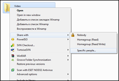 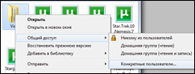
Таким образом мы попадём в окошко выбора конкретных людей, которым хотим дать доступ к папке. В нашем случае, мы даём доступ всем, кто захочет. Доступ мы дадим только на чтение, так что записать в папку какой-то вирус или что-то удалить никто не сможет.
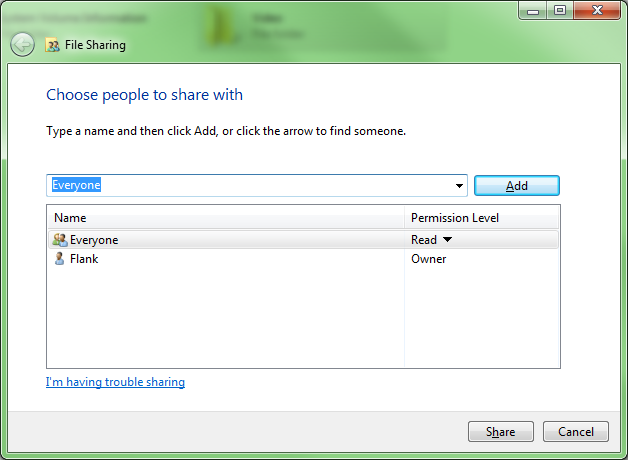
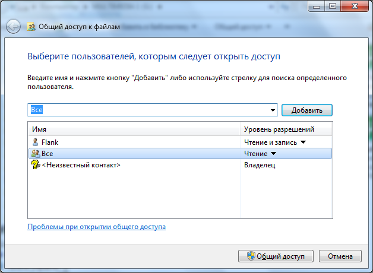
Вводим в предложенном поле “Everyone” (“Все”) и нажимаем кнопку “Add” (“Добавить”). Это добавит в список ниже значение, которое будет отвечать за всех подключившихся. Во второй колонке должно быть установлено значение “Read” (“Чтение”) напротив добавленного “Everyone” (“Все”), что означает, что любой пользователь сможет только читать данные, но не записывать или удалять. Также в этом списке есть вторая запись - “Flank”, это я – и значение стоит “Owner” (“Владелец”), а значит я на эту папку буду иметь полный доступ к файлам. Завершаем настройку, кликнув на кнопку “Share” (“Общий доступ”), внизу.
Обратите внимание, на следующее окно. В нём мы видим полный сетевой адрес папки, по которому ваш друг сможет на неё зайти. Чтобы этот адрес не переписывать вручную, можно нажать правой кнопкой мышки на папке, и выбрать опцию - “Copy link” (“Копировать ссылку”), после чего адрес можно сразу переслать другу или сохранить, например, в блокноте.
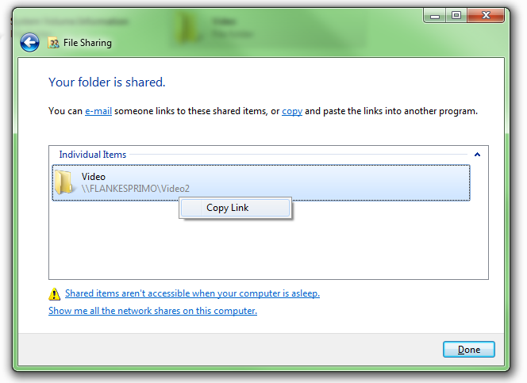
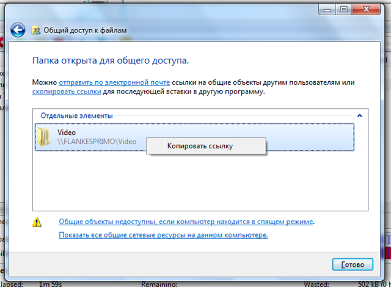
Завершив с копированием ссылки, нажимаем кнопку “Done” (“Готово”). Этими действиями Windows запомнил, что указанную папку, при запросе из другого компьютера, нужно будет отобразить для чтения любому, кто попросит.
Шаг 2. Windows Firewall (или, как его любит называть майкрософт – брандмауэр)
Выполнив предыдущий шаг, ваш друг, перейдя по ссылке ничего не увидит. Сначала, некоторое время, Windows ничего не отобразит, потом покажет ошибку, сообщающую, что компьютер не найден. Почему? Всё просто – система друга посылает запрос по переданному вами адресу и не получает ответ.
Как вообще работает система обмена информацией между компьютерами, что блокирует связь между ними? Это можно понять на примере наших папок. Допустим, ваш друг, всё равно с какого компьютера с какой системой, пытается получить доступ к вашей папке, что при этом происходит я описал на следующей схеме:
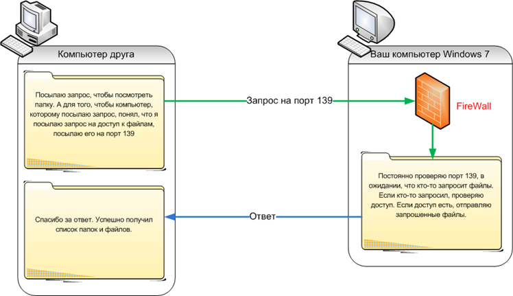
Как видно со схемы, наш Windows 7 понимает, что у него попросили файлы только в том случае, если файлы запрошены по определённому порту. Кроме того на пути запроса стоит загадочный Firewall, который, в свою очередь, не даёт запросу просто так достичь своей цели. В принципе это хорошо, т.к. разные злоумышленники просто так не смогут давать вашему компьютеру разные запросы. И как мы видим, Firewall не даёт никакой ответ компьютеру друга, соответственно тот, не получив ответа и выдаёт ошибку о том, что компьютер не найден.
Нашей задачей на этом шаге является установить параметры так, чтобы Firewall пропускал запросы, но не все, а только на доступ к папкам и файлам. Чтобы быстро найти Firewall выполняем следующие шаги: открываем панель управления “Control Panel”, переходим в центр безопасности “System and Security” (“Система и Безопасность”), запускаем управление самим Firewall “Windows Firewall” (“Брандмауэр Windows”).
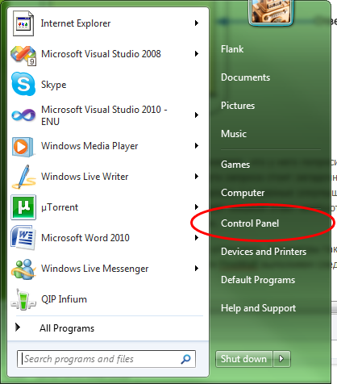
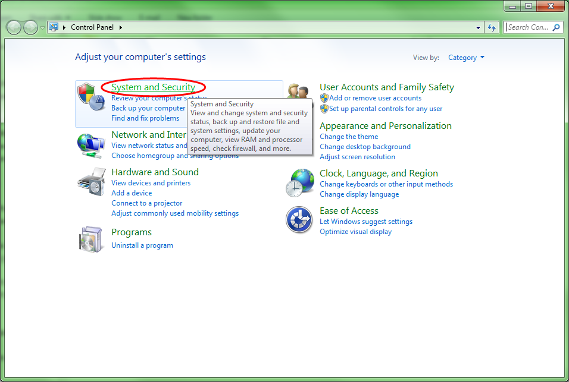
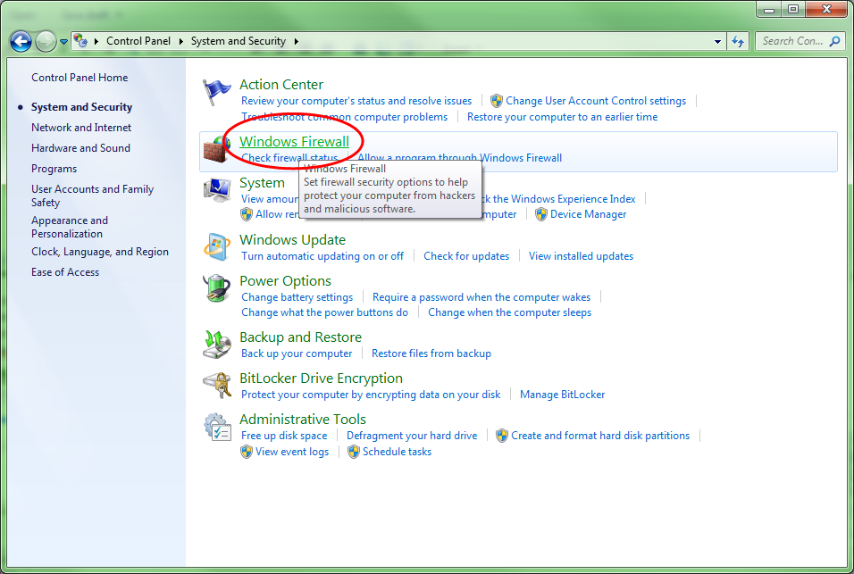
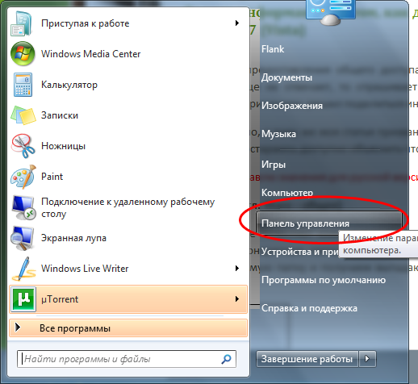
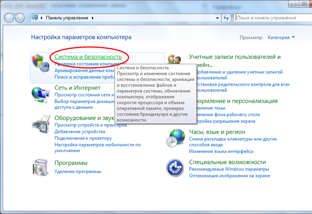
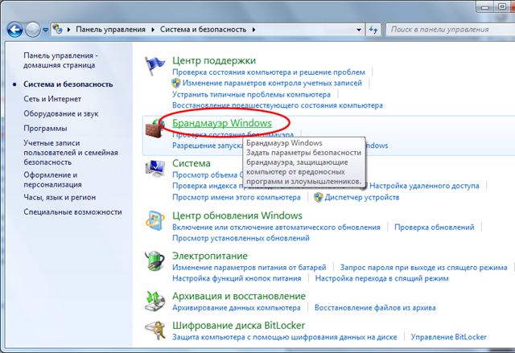
Как мы помним – наша задача открыть порты для доступа к папкам и файлам. В примере я приводил только 1 порт – 139-й, но на самом деле их 4, кроме того 2 порта одного типа – TCP, а 2 порта другого типа – UDP. Итак, нажимаем “Advansed settings…” (“Дополнительные параметры…”), чтобы добавить новые правила для Firewall, а в открывшимся окне, слева, выбрать пункт списка “Inbound Rules” (“Правила для входящих подключений”), таким образом мы сможем управлять правилами для входящих запросов. Добавим новое правило кнопкой “New Rule…” (“Создать правило…”).
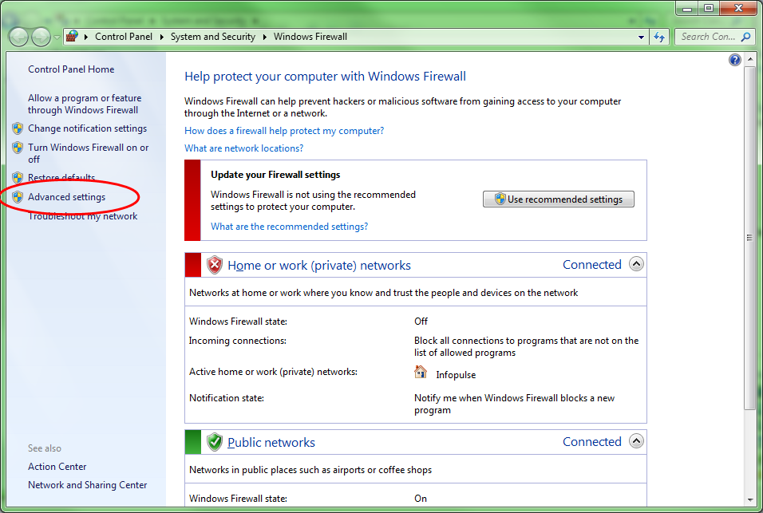
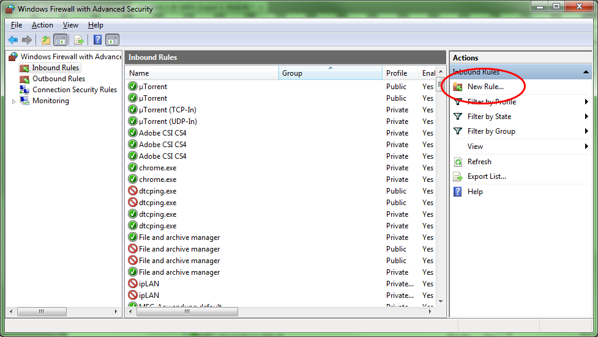
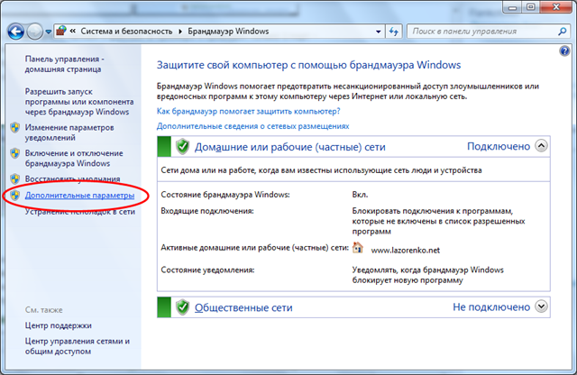
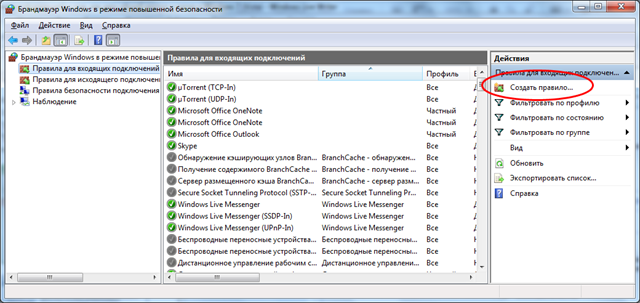
В открывшемся окне выбираем тип правила – “Port” (“Для порта”) и нажимаем кнопку “Next” (“Далее”). Указываем тип порта TCP, и вписываем через запятую 139, 445, после, снова нажимаем “Next” (“Далее”). В следующем окне всё установлено по умолчанию правильно, а именно “Allow the connection” (“Разрешить подключение”), нажимаем “Next” (“Далее”), пока не попадаем на последний шаг – ввод названия и описания нашему правилу. В моём случае, я придумал название “Shared Folders - TCP 139, 445”. Нажимаем “Finish” (“Готово”).


Повторяем процедуру снова, но теперь для портов с типом UDP. Сами порты должны быть 137 и 138:


На этом работа с Windows Firewall завершена. Надеюсь вы понимаете, что весь этот проход нужен не просто так, всё это уменьшает риск попадания к вам вирусов.
Шаг 3. Убрать запрос пароля
После завершения предыдущего шага, компьютер вашего друга получит ответ от вашего Windows 7, но этим ответом будет просьба Windows 7 представиться. Дело в том, что по умолчанию Windows 7 не даёт возможности кому-либо лазить по папкам, он хочет конкретно знать, кто это делает. Если вы не хотите создавать для вашего друга учётную запись или давать ему свой пароль, вам необходимо уговорить Windows, разрешать всем, без ввода логина и пароля, просматривать папки. Всё бы хорошо да и Windows 7 не хочет поступаться в безопасности, поэтому позволяет изменить такой параметр только для домашних сетей. Соответственно, нам необходимо рассказать ему, что текущая сеть – домашняя.
На значке сетевого подключения нажимаем правой кнопкой мыши и выбираем пункт “Open Network and Sharing Center” (“Центр управления сетями и общим доступом”):


Таким образом мы попадаем на страницу, где можно видеть текущее подключение, а также, изменить его.


Если внимательно посмотреть на окно то будет видно, что я подключён к сети Infopulse и она установлена у меня как рабочая сеть “Work network” (“Сеть предприятия”). Наша задача изменить сеть на домашнюю, для этого нужно нажать мышкой по этой же надписи - “Work network” (“Сеть предприятия”), а в открывшемся окошке выбрать - “Home network” (“Домашняя сеть”). Если у вас уже установлена Домашняя сеть, как в русскоязычном примере, это действие можно пропустить.


Отлично! Теперь ваша сеть считается домашней. Осталось указать системе, чтобы она пускала без запроса логина и пароля всех посетителей из домашней сети. Для этого в основном окне сетевого центра нажимаем ссылку “Choose homegroup and sharing options” (“Выбор домашней группы и параметров общего доступа”), далее ищем и нажимаем ссылку “Change advanced sharing settings…” (“Изменение дополнительных параметров общего доступа”), а в следующем окне, раскрываем список “Home or Work” (“Домашний или рабочий”), проматываем страничку вниз и отмечаем опцию “Turn off password protected sharing” (“Отключить общий доступ с парольной защитой”):


После проделанной процедуры не забудьте нажать “Save changes” (“Сохранить изменения”). Вот и всё, можете снова просить друга пройти по ссылке, на этот раз он видит файлы и папки без запроса пароля, которые вы открыли для общего доступа в первом шаге.
Шаг 4. Если ничего не помогает или у вас другие настройки
Понятное дело, все возможные варианты предусмотреть я не могу. Также, возможно, я не знаю о более простом способе что-то сделать. Поэтому, оставляйте тут комментарии. Мне сразу приходит уведомление на почту и я постараюсь как можно быстрее ответить, решить вашу проблему и дополнить информацией статью.